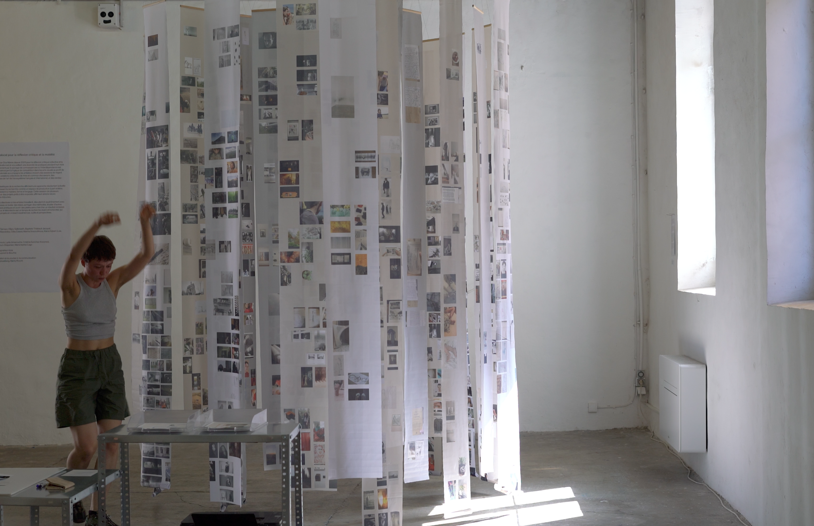
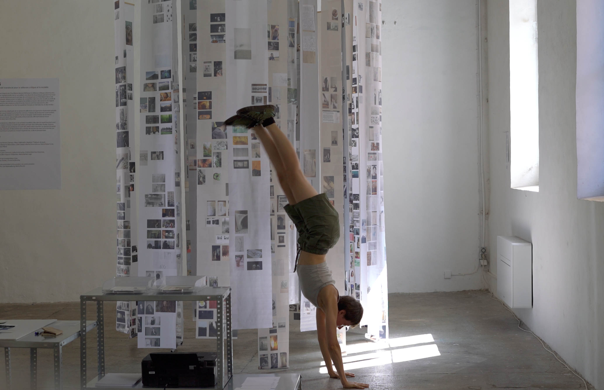
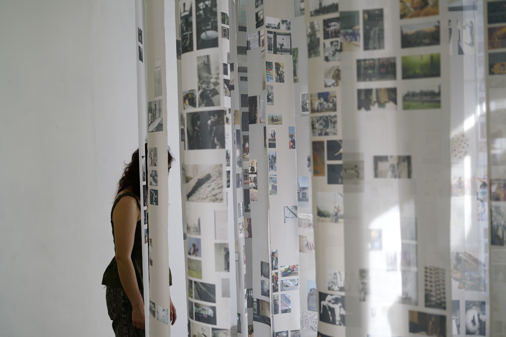

Carnet de bord
performance, 30 minutes, 2026
Dans Carnet de bord, le corps évolue autour et à l’intérieur d’un dispositif composé de lés sur lesquels sont imprimées des images. Il cherche, répète, chute, recommence. La voix accompagne ces mouvements et fait surgir des récits issus de recherches, de lectures et d’observations du quotidien. Le mouvement et le récit se construisent ensemble : à chaque motif physique correspond un récit, comme si le corps devenait le support d’une mémoire en train de se faire. Les gestes sont simples, répétitifs, parfois obstinés. À la fin de la performance, les frontières entre l’espace scénique et l’espace du public s’ouvrent. Le dispositif devient traversable et les spectateurs sont invités à y entrer à leur tour, à circuler parmi les images et à faire l’expérience physique de cet espace.
___
Journal du bord :
Création réalisé durant la programme d'accompagnement Ecumes, Dos Mares


